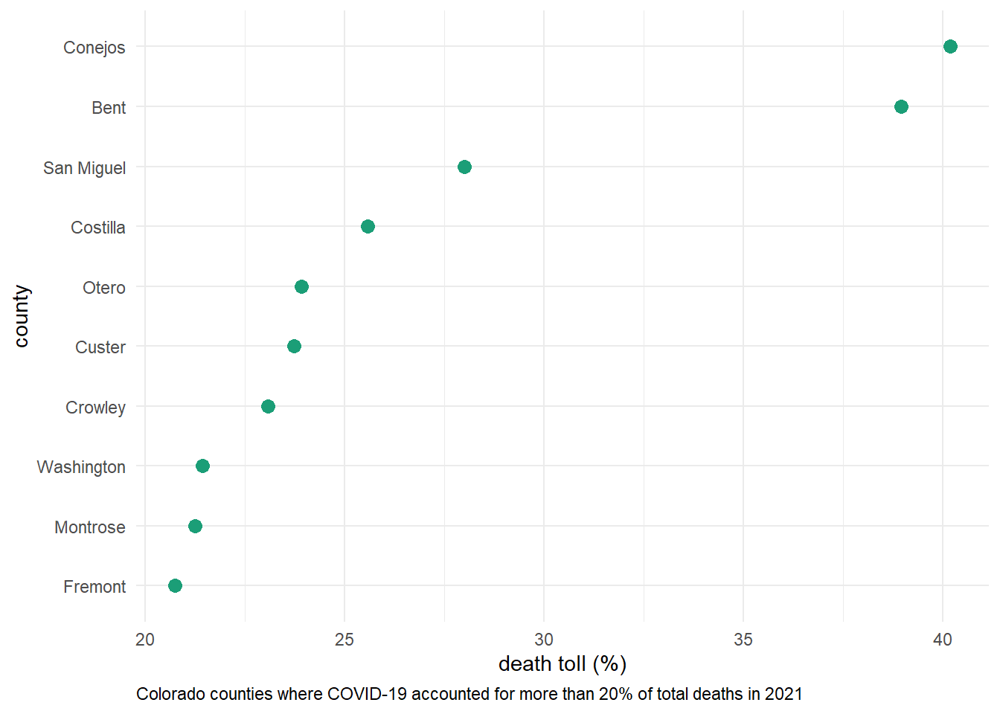
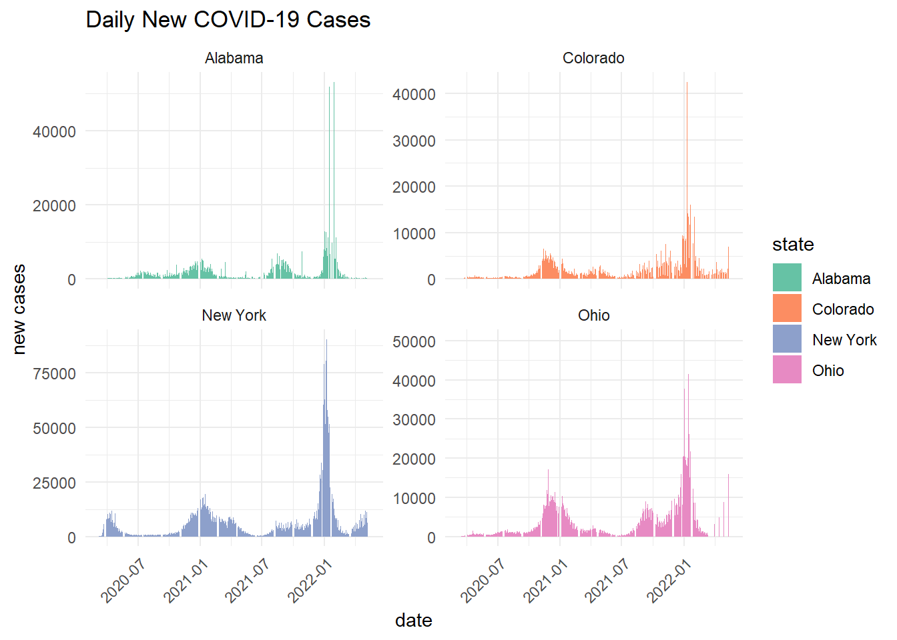
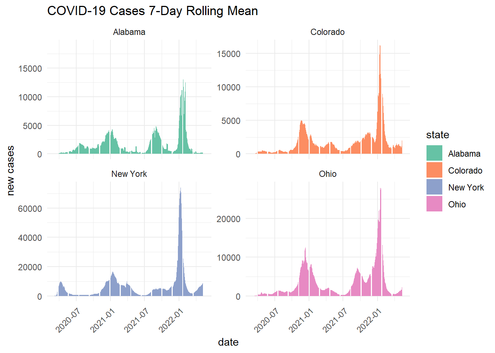
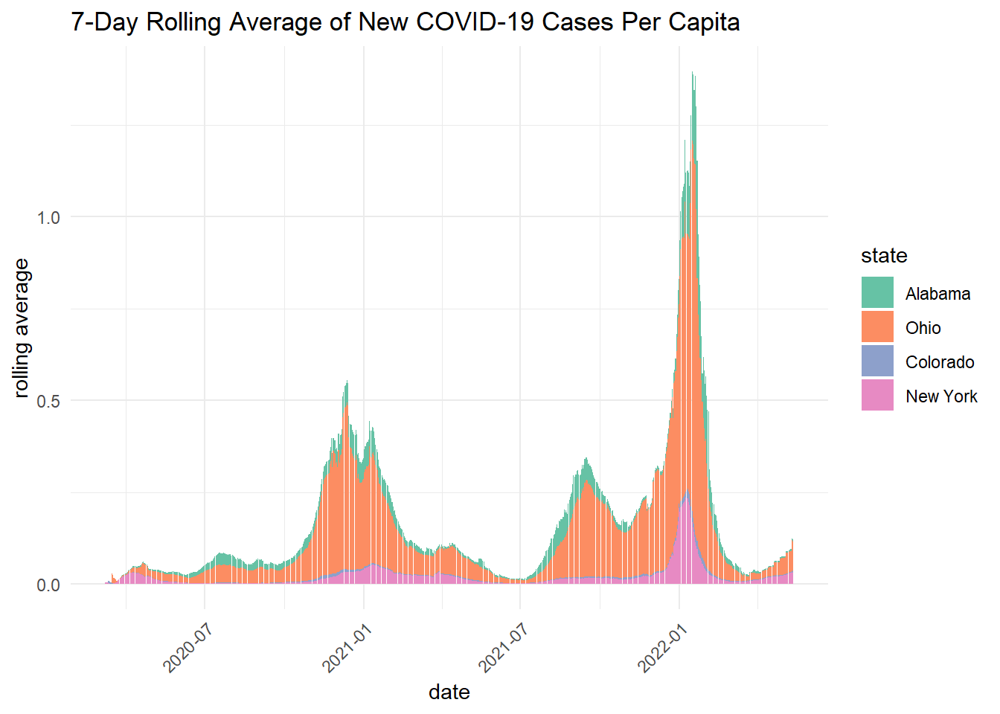
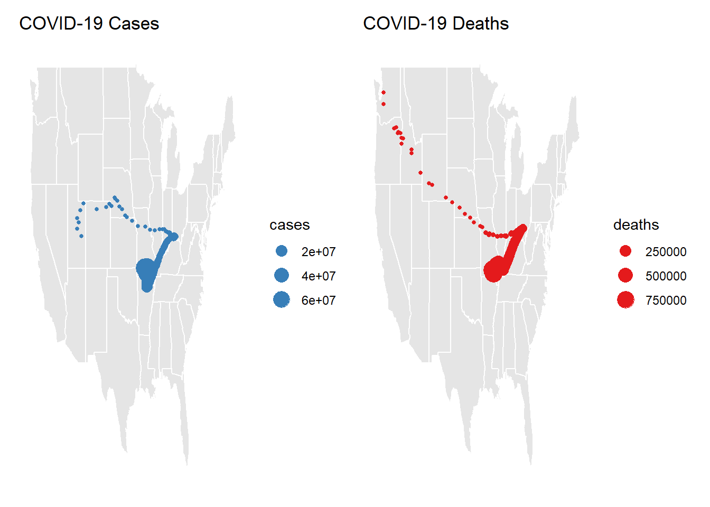
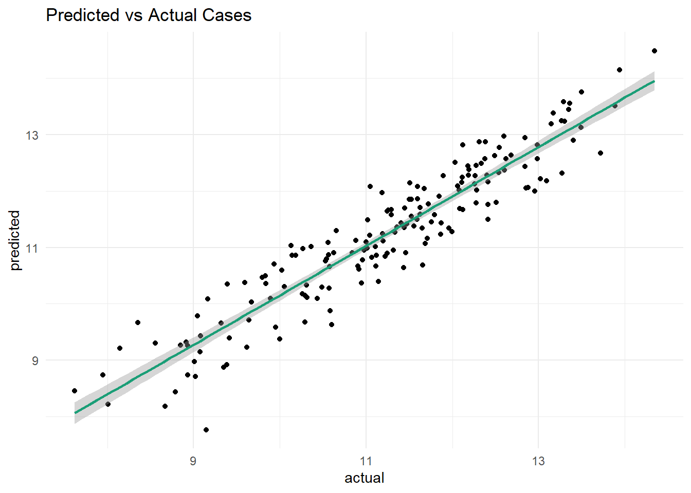
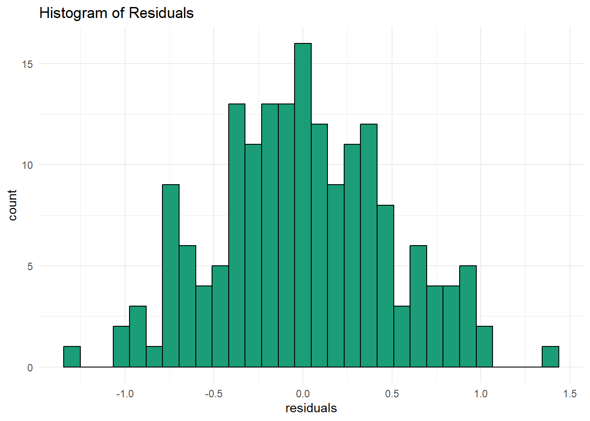

data <- read_csv("https://raw.githubusercontent.com/nytimes/covid-19-data/master/us-counties.csv")Lab 1 - COVID Trends
Question 1. Daily Summary
- read in the data from the NY-Times URL
- create an object called my.date and set it as “2022-02-01”
- create an object called my.state and set it to “Colorado”
my.date <- as.Date("2022-02-01")
my.state <- "Colorado"- make a subset that limits the data to Colorado and add a new column with daily new cases. do the same for new deaths
co_data <- data %>%
filter(state == my.state) %>%
group_by(county) %>%
mutate(new_cases = cases - lag(cases, n = 1),
new_deaths = deaths - lag(deaths)) %>%
drop_na() %>%
ungroup()- generate 2 tables. the first should show the 5 counties with the most cummulative cases on your date of interest, and the second should show the 5 counties with the most new cases on that same date
today_data <- filter(co_data, date == my.date)
slice_max(today_data, n = 5, order_by = cases) %>%
select(county, state, cases) %>%
flextable() %>%
set_header_labels(
cases = "cases") %>%
set_caption("Top 5 Counties by Cummulative COVID-19 Cases")county | state | cases |
|---|---|---|
El Paso | Colorado | 170,673 |
Denver | Colorado | 159,022 |
Arapahoe | Colorado | 144,255 |
Adams | Colorado | 126,768 |
Jefferson | Colorado | 113,240 |
slice_max(today_data, n = 5, order_by = new_cases) %>%
select(county, state, new_cases) %>%
flextable() %>%
set_header_labels(
new_cases = "cases") %>%
set_caption("Top 5 Counties by New COVID-19 Cases")county | state | cases |
|---|---|---|
El Paso | Colorado | 630 |
Arapahoe | Colorado | 401 |
Denver | Colorado | 389 |
Adams | Colorado | 326 |
Jefferson | Colorado | 291 |
Question 2. Evaluating Census Data (EDA)
- read in the population data and create a five digit FIP variable. keep only columns that contain “NAME” or “2021” and remove all state level rows
# Load population data from the given URL
pop_url <- read_csv("co-est2023-alldata.csv")# Read and process the population data
cd <- pop_url %>%
filter(COUNTY != "000") %>% # Filter out rows with COUNTY = "000"
mutate(fips = paste0(STATE, COUNTY)) %>% # Create a new FIPS code column
select(STNAME, COUNTY, fips, contains("2021")) # Select relevant columnsb. Data Exploration: Attributes are state names and numbers. I am able to see that there are columns for state, county, fips, population, births, and deaths. Fips matches one of the columns in the Covid data. The dimensions have been modified to include counties that do not have the identification number “000”, and includes columns that have information for the year 2021.
Question 3: Per Capita Summary
- join the population data to the Colorado COVID data and compute the per capita cumulative cases, per capita new cases, and per capita new deaths. generate 2 new tables. the first should show the 5 counties with the most cumulative cases per capita on your date, and the second should show the 5 counties with the most new cases per capita on the same date
co_join <- inner_join(co_data, cd, by = "fips") per_capita <- co_join %>%
group_by(county) %>%
mutate(cases_per_capita = (cases/POPESTIMATE2021) * 100000,
new_cases_per_capita = (new_cases/POPESTIMATE2021) * 100000,
new_deaths_per_capita = (deaths/POPESTIMATE2021) * 100000) %>%
drop_na() %>%
ungroup()
capita_my_date <- per_capita %>%
filter(date == my.date)
slice_max(capita_my_date, n = 5, order_by = cases_per_capita) %>%
select(county, cases_per_capita) %>%
flextable() %>%
set_header_labels(
cases_per_capita = "cases per capita") %>%
set_caption("Top 5 Colorado Counties")county | cases per capita |
|---|---|
Crowley | 51,176.98 |
Bent | 41,187.49 |
Pitkin | 34,296.59 |
Lincoln | 34,240.82 |
Logan | 30,477.01 |
slice_max(capita_my_date, n = 5, order_by = new_cases_per_capita) %>%
select(county, new_cases_per_capita) %>%
flextable() %>%
set_header_labels(
new_cases_per_capita = "new cases per capita") %>%
set_caption("Top 5 Colorado Counties by New Cases")county | new cases per capita |
|---|---|
Crowley | 976.4603 |
Bent | 412.0622 |
Sedgwick | 386.9304 |
Washington | 287.5924 |
Las Animas | 265.1039 |
Question 4: Rolling Thresholds
- filter the merged COVID/Population data for Colorado to include the last 14 days. determine the total number of new cases in the last 14 days per 100,000 people. print a table of the top 5 counties and report the number of counties that meet the watch list condition
threshold <- per_capita %>%
filter(date >= (my.date - 14) & date <= my.date) %>%
group_by(county) %>%
summarize(
total_new_cases = sum(new_cases),
population = sum(POPESTIMATE2021)) %>%
mutate(new_cases_threshold = (total_new_cases / population) * 100000) %>%
drop_na() %>%
ungroup()
slice_max(threshold, n = 5, order_by = new_cases_threshold) %>%
select(county, new_cases_threshold) %>%
flextable() %>%
set_header_labels(new_cases_threshold = "new cases") %>%
set_caption("Top 5 Colorado Watch List Counties")county | new cases |
|---|---|
Crowley | 365.0102 |
Lincoln | 250.9288 |
Alamosa | 250.5177 |
Mineral | 222.4614 |
Conejos | 222.4567 |
threshold %>%
filter(new_cases_threshold > 100) %>%
nrow()[1] 5353 Colorado counties meet the watch list condition
Question 5: Death toll
- determine the percentage of deaths in each county that were attributed to COVID last year(2021). plot a visualization of all counties where COVID deaths account for 20% or more of the annual death toll
death_toll_2021 <- co_join %>%
mutate(year = year(date)) %>%
filter(year == 2021) %>%
group_by(county) %>%
summarize(covid_death = sum(new_deaths),
total_deaths = first(DEATHS2021)) %>%
mutate(death_toll = covid_death / total_deaths * 100)
death_20 <- death_toll_2021 %>%
filter(death_toll > 20)
death_20 %>%
ggplot(aes(x = death_toll, y = reorder(county, death_toll))) +
geom_point(size = 3, color = "#1B9E77") + # Use the first color from Set2
labs(x = "death toll (%)",
y = "county",
caption = "Colorado counties where COVID-19 accounted for more than 20% of total deaths in 2021") +
theme_minimal() +
theme(legend.position = "none",
plot.caption = element_text(hjust = 0))
Question 6: Multi-state
- group/summarize county level data to the state level, filter it to the four states of interest, and calculate the number of daily new cases and the 7-day rolling mean
state_data <- data %>%
filter(state %in% c("Alabama", "Ohio", "Colorado", "New York")) %>%
group_by(state, date) %>%
summarize(fips = first(fips),
cases = sum(cases, na.rm = TRUE),
deaths = sum(deaths, na.rm = TRUE),
.groups = "drop") %>%
group_by(state) %>%
arrange(state, date) %>%
mutate(new_cases = pmax(0, cases - lag(cases, n = 1)),
new_deaths = pmax(0, deaths - lag(deaths, n = 1)),
new_cases_mean = rollmean(new_cases, 7, fill = NA, align = "right"),
new_deaths_mean = rollmean(new_deaths, 7, fill = NA, align = "right")) %>%
drop_na() %>%
ungroup() - facet plot the daily new cases and the 7-day rolling mean
ggplot(state_data, aes(x = date, y = new_cases)) +
geom_col(aes(fill = state)) +
facet_wrap(~state, scales = "free_y") +
labs(title = "Daily New COVID-19 Cases",
x = "date",
y = "new cases") +
scale_fill_brewer(palette = "Set2") +
theme_minimal() +
theme(axis.text.x = element_text(angle = 45, hjust = 1))
ggplot(state_data, aes(x = date, y = new_cases_mean)) +
geom_col(aes(fill = state)) +
facet_wrap(~state, scales = "free_y") +
labs(title = "COVID-19 Cases 7-Day Rolling Mean",
x = "date",
y = "new cases") +
scale_fill_brewer(palette = "Set2") +
theme_minimal() +
theme(axis.text.x = element_text(angle = 45, hjust = 1))
- explore the cases per capita of each state and calculate the 7-day rolling mean of the new cases per capita
states_join <- inner_join(state_data, cd, by = "fips") %>%
mutate(new_cases_capita = new_cases / POPESTIMATE2021,
new_cases_mean = rollmean(new_cases_capita, 7, fill = NA, align = "right")) %>%
mutate(state = factor(state, levels = c("Alabama", "Ohio", "Colorado", "New York"))) - plot the 7-day rolling averages overlying each other
ggplot(states_join, aes(x = date, y = new_cases_mean, fill = state, group = state)) +
geom_col() +
labs(title = "7-Day Rolling Average of New COVID-19 Cases Per Capita",
x = "date",
y = "rolling average") +
scale_fill_brewer(palette = "Set2") +
theme_minimal() +
theme(axis.text.x = element_text(angle = 45, hjust = 1)) 
- Briefly describe the influence scaling by population had on the analysis? Does it make some states look better? Some worse? How so?
Scaling by population shows that per capita rolling averages are higher in Alabama and Ohio. This differs from the state wide daily cases and 7-day rolling averages, which showed New York as the state with the highest COVID-19 cases.
Question 7. Time and Space
- calculate the Weighted Mean Center of the COVID-19 outbreak
county_centroids <- readr::read_csv('https://raw.githubusercontent.com/mikejohnson51/csu-ess-330/refs/heads/main/resources/county-centroids.csv')county_join <- inner_join(county_centroids, data, by = "fips") %>%
group_by(date) %>%
summarise(
weighted_x_cases = sum(LON * cases, na.rm = TRUE) / sum(cases, na.rm = TRUE),
weighted_y_cases = sum(LAT * cases, na.rm = TRUE) / sum(cases, na.rm = TRUE),
weighted_x_deaths = sum(LON * deaths, na.rm = TRUE) / sum(deaths, na.rm = TRUE),
weighted_y_deaths = sum(LAT * deaths, na.rm = TRUE) / sum(deaths, na.rm = TRUE),
cases = sum(cases, na.rm = TRUE),
deaths = sum(deaths, na.rm = TRUE)
) %>%
drop_na() - make two plots next to each other showing cases in navy and deaths in red. describe the differences in the plots and what they mean about the spatial patterns seen with COVID impacts
a <- ggplot() +
borders("state", fill = "gray90", colour = "white") +
geom_point(data = county_join, aes(x = weighted_x_cases, y = weighted_y_cases, size = cases), color = "#377EB8") +
labs(title = "COVID-19 Cases") +
theme_minimal() +
theme(
axis.title = element_blank(),
axis.text = element_blank(),
axis.ticks = element_blank(),
panel.grid = element_blank()
)
b <- ggplot() +
borders("state", fill = "gray90", colour = "white") +
geom_point(data = county_join, aes(x = weighted_x_deaths, y = weighted_y_deaths, size=deaths), color = "#E41A1C") +
labs(title = "COVID-19 Deaths") +
theme_minimal() +
theme(
axis.title = element_blank(),
axis.text = element_blank(),
axis.ticks = element_blank(),
panel.grid = element_blank()
)
a + b
The weighted mean of both COVID cases and Deaths are highest around Arkansaw, Missouri, Tenessee, Kentucky, and Illinois. Weighted Cases appear to be highest in middle North America, whereas death spread towards the Pacific Northwest. There are higher numbers of cases than deaths.
Question 8: Trends
Data Visualization
- compute county level daily new cases and deaths, and then join it to the census data
- add a new column to the data for year, month, and season
- group the data by state, year, and season and summarize the total population, new cases, and new deaths per grouping
- apply a log transformation to cases, deaths, and population
trends <- data %>%
group_by(fips) %>%
mutate(new_cases = pmax(0, cases - lag(cases, n = 1)),
new_deaths = pmax(0, deaths - lag(deaths))) %>%
ungroup() %>%
left_join(cd, by = "fips") %>%
mutate(year = lubridate::year(date),
month = lubridate::month(date),
season = dplyr::case_when(
month %in% 3:5 ~ "Spring",
month %in% 6:8 ~ "Summer",
month %in% 9:11 ~ "Fall",
month %in% c(12, 1, 2) ~ "Winter")) %>%
group_by(state, year, season) %>%
summarize(
population = sum(POPESTIMATE2021),
new_cases = sum(new_cases, na.rm = TRUE),
new_deaths = sum(new_deaths, na.rm = TRUE)) %>%
ungroup() %>%
mutate(log_cases = log(new_cases + 1),
log_deaths = log(new_deaths + 1),
log_population = log(population))Model Building
- build a linear model to predict the log of cases using the log of deaths, the log of population, and the season.
- Once the model is built, summarize it (summary) and report the R-squared value and the p-value of the model. What does this mean for the value of its application?
lm_model <- lm(log_cases ~ log_deaths*log_population + season, data = trends)
summary(lm_model)
Call:
lm(formula = log_cases ~ log_deaths * log_population + season,
data = trends)
Residuals:
Min 1Q Median 3Q Max
-1.31412 -0.31982 -0.02291 0.34272 1.37613
Coefficients:
Estimate Std. Error t value Pr(>|t|)
(Intercept) -2.69871 3.21708 -0.839 0.40274
log_deaths 0.77857 0.39852 1.954 0.05242 .
log_population 0.53675 0.18023 2.978 0.00333 **
seasonSpring -0.79528 0.12221 -6.507 8.55e-10 ***
seasonSummer -0.31156 0.13100 -2.378 0.01852 *
seasonWinter 0.37357 0.11530 3.240 0.00144 **
log_deaths:log_population -0.01318 0.02103 -0.627 0.53161
---
Signif. codes: 0 '***' 0.001 '**' 0.01 '*' 0.05 '.' 0.1 ' ' 1
Residual standard error: 0.4979 on 167 degrees of freedom
(380 observations deleted due to missingness)
Multiple R-squared: 0.8764, Adjusted R-squared: 0.8719
F-statistic: 197.3 on 6 and 167 DF, p-value: < 2.2e-16Multiple R-squared: 0.8764, Adjusted R-squared: 0.8719, p-value: < 2.2e-16
The R-squared value is high, indicating a strong model fit. The p-value is low, indicating that the model is statistically significant.
Question 9: Evaluation
- generate a data frame of predictions and residuals
- create a scatter plot of predicted cases vs. actual cases. add a line of best fit to the plot, and make the plot as appealing as possible. Describe the relationship that you see…are you happy with the model?
Yes, I am happy with the model. The scatter plot shows a strong linear relationship between predicted and actual log cases, with the points following the line of best fit.
- create a histogram of the residuals to visually check for residual normality. how does the distribution look? was a linear model appropriate for this case?
The histogram looks to be normally distributed. A linear model was appropriate for this case.
model_eval <- broom::augment(lm_model, trends = trends)
ggplot(model_eval, aes(x = log_cases, y = .fitted)) +
geom_point() +
geom_smooth(method = "lm", color = "#1B9E77") +
labs(title = "Predicted vs Actual Cases",
x = "actual",
y = "predicted") +
theme_minimal()
ggplot(model_eval, aes(x = .resid)) +
geom_histogram(fill = "#1B9E77", color = "black", bins = 30) +
labs(title = "Histogram of Residuals",
x = "residuals") +
theme_minimal()